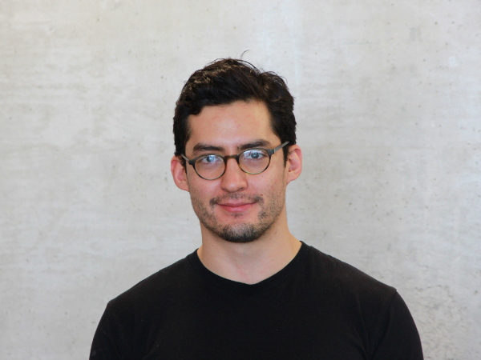

José I. Rojas Echenique
Evolutionary biologist interested in epistasis and co-culture.
Postdoc with Charlie Boone and Brenda Andrews at the University of Toronto.

- Contact:
-
keybase.io/jireva,
jose.rojas.echenique@utoronto.ca
- Publications:
-
Curriculum vitae↓,
ORCID,
Google scholar
- Other content:
-
github.com/jireva,
twitter.com/jireva